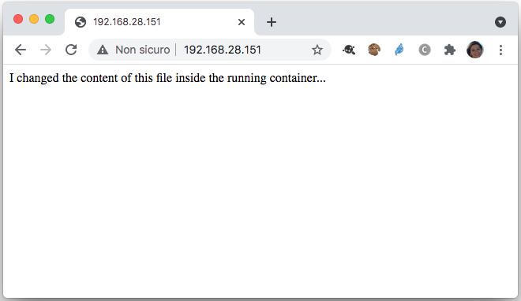
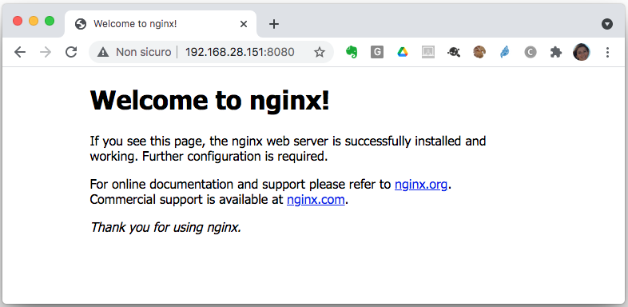
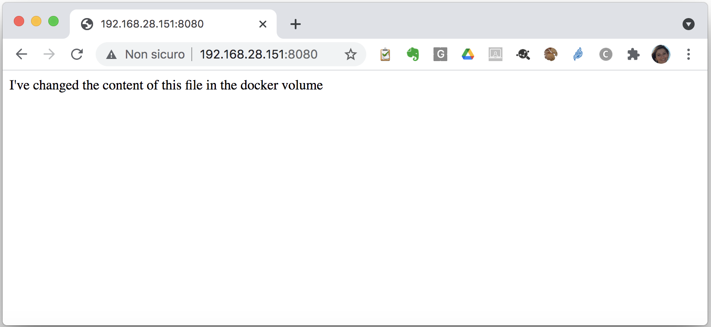
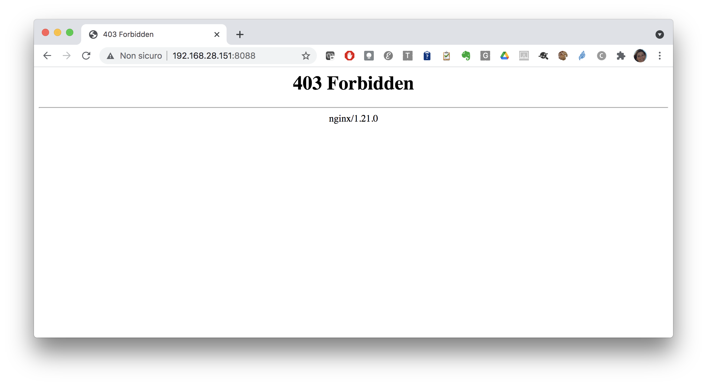
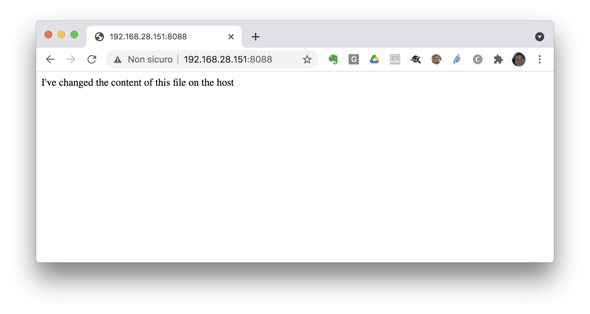

Docker volumes and bind-mounts
Whenever a running container wants to write data, it actually put that data into the writable layer through a storage driver.
We will now do some tasks using volumes.
Let's create a volume:
docker volume create volume1
volume1
and check that the volume has been created:
docker volume ls
DRIVER VOLUME NAME
local volume1
Let's do the same with a second volume:
docker volume create volume2
volume2
and check:
docker volume ls
DRIVER VOLUME NAME
local volume1
local volume2
Let's now remove the second volume we've created:
docker volume rm volume2
volume2
and check that it has actually been removed
docker volume ls
DRIVER VOLUME NAME
local volume1
Now let's dive into real-life (or quasi-real-life) usage of Docker volumes.
Let's use our nginx2 container created previously.
Tip
If you don't have this container running you can recreate it with the following command:
docker container run -d -p 80:80 --name nginx2 nginx
Let’s use the docker exec command to edit the welcome page and load it.
docker container exec -it nginx2 bash
echo "I changed the content of this file inside the running container..." > /usr/share/nginx/html/index.html
You will be able to see these changes connecting to the port 80 of your host:

Let’s restart the container:
docker container restart nginx2
What happens? We can still see in the browser the changes that we made.
Now... what if we stop this container and start another one and load the page?
docker container run -d -p 8080:80 --name nginx3 nginx
Warning
For this second container you need to specify a different host port, otherwise there will be a conflict and your container will not be started:
driver failed programming external connectivity on endpoint nginx3 (96fad8e096e1a124147049765f0d734e2a034712fb253711450c62a7158b1f21): Bind for 0.0.0.0:80 failed: port is already allocated.
Connect to port 8080 of your host, you will see the default welcome page: there is no way that we could access the file that we have changed in another container.

Using docker volumes¶
Let's now create a docker volume to be used with our nginx container:
docker volume create myvol
We can see the location of volumes in the docker area of the host file system with the inspect command:
docker volume inspect myvol
whose output contains the following information:
[
{
"CreatedAt": "2021-06-07T10:53:26Z",
"Driver": "local",
"Labels": {},
"Mountpoint": "/var/lib/docker/volumes/myvol/_data",
"Name": "myvol",
"Options": {},
"Scope": "local"
}
]
Let's re-create our nginx container with the following command that mounts the volume myvol in /usr/share/nginx/html:
Remove the old container (please note that the -f or --force flag is needed to delete a running container; otherwise, we should docker container stop nginx3 first, then docker container rm nginx3):
docker container rm -f nginx3
Recreate it with the volume mounted, using the --mount directive as in the following:
docker container run -d -p 8080:80 --name nginx3 --mount type=volume,source=myvol,destination=/usr/share/nginx/html nginx
Note
- if we hadn’t create the volume earlier, docker would have created it for us with the name given in source field of
--mountparameter - remember that volumes are not deleted when we erase the container which they are attached to
- if the container has got in
targetdirectory any files, this files will be copied into the volume
Now let's enter the container and modify the welcome page (the index.html file served by nginx by default, located at /usr/share/nginx/html/index.html inside the container):
docker exec -it nginx3 bash
Once inside the container, run the following command:
echo "I've changed the content of this file in the docker volume" > /usr/share/nginx/html/index.html

Let' stop and remove this container::
docker rm -f nginx3
docker container run -d -p 8080:80 --name nginx3 --mount type=volume,source=myvol,destination=/usr/share/nginx/html nginx
If we load the page again we will still see the html file that we edited in the volume.
Now let's create another container sharing the same volume (we will now use port 8081, in order not to clash with the previous container):
docker container run -d -p 8081:80 --name nginx3-2 --mount type=volume,source=myvol,destination=/usr/share/nginx/html nginx
curl 192.168.28.151:8081
Using bind mounts¶
Now we will create a container running nginx using a bind mount (with the type=bind directive) for the main served directory instead of a volume.
Note
- if we didn’t create a directory on docker host earlier docker will not create it for us with
--mountparameter, auto-creating is available only in older--volume - bind mounts by default will not be deleted while removing the container
- if the container has got in
targetdirectory any files, this files will NOT be copied into bind mount directory, bind directory will cover any files in a target container directory
Try the following command:
docker container run -d -p 8088:80 --name nginx4 --mount type=bind,source=/tmp/nginx,destination=/usr/share/nginx/html nginx
You will get an error since the path /tmp/nginx does not exist on the host:
docker: Error response from daemon: invalid mount config for type "bind": bind source path does not exist: /tmp/nginx.
See 'docker run --help'.
Let's create the directory on the host:
mkdir /tmp/nginx
Now re-run the command for creating the container with the /usr/share/nginx/html directory mapped to the local (on the host) /tmp/nginx:
docker container run -d -p 8088:80 --name nginx4 --mount type=bind,source=/tmp/nginx,destination=/usr/share/nginx/html nginx
If you inspect the container:
docker container inspect nginx4
you will see the bind-mount:
...
"Mounts": [
{
"Type": "bind",
"Source": "/tmp/nginx",
"Target": "/usr/share/nginx/html"
}
],
...
Connect to port 8088 on the host IP to see the result:

As you can see we get an error message from nginx as the bind-mount has overwritten the content of /usr/share/nginx/html (remember that the behaviour with docker volumes is different, any file inside the container is copied in the volume)
Let's now create the index.html file in the host path /tmp/nginx:
echo "I've changed the content of this file on the host" > /tmp/nginx/index.html
Then reload the page in the browser:

Question
As done before, try to remove the container and recreate it with the same bind-mount...what happens?
Lab challenge¶
Goal: create a service based on two containers:
- WordPress
- MySQL
and then use your web browser to access wordpress on port 8080.
Tip
- Create a volume
db_datato provide persistent storage for the DBMS - Launch MySQL (image name:
mysql:5.7) with container namedb, using the previously created volume, and pass environment variables to the container to configure it - Inspect the MySQL container finding its private IP
- Launch WordPress (image name:
wordpress:latest) with container namewordpress, and pass environment variables to the container to configure it (using as db host the IP of the MySQL container).